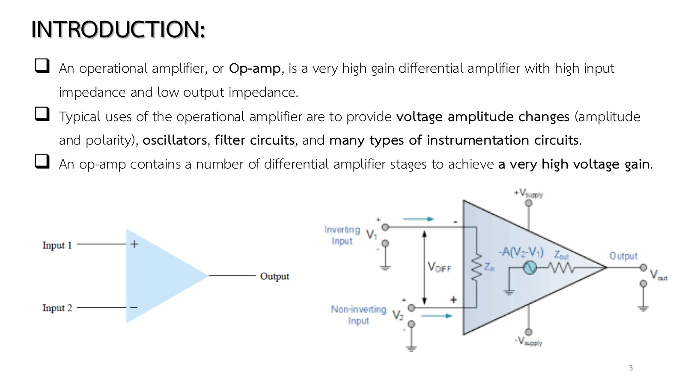
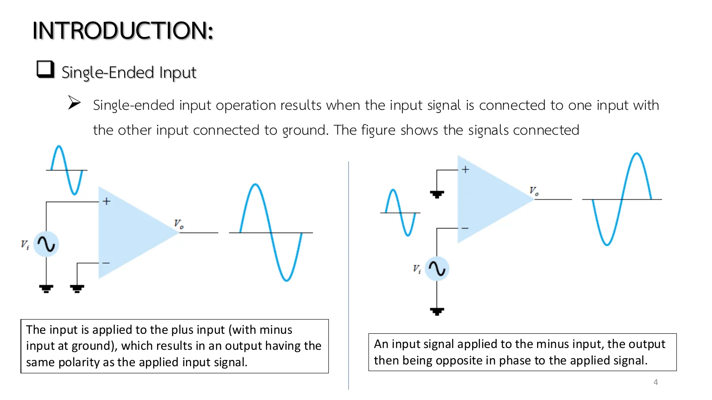
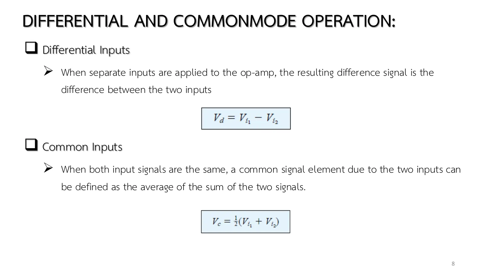
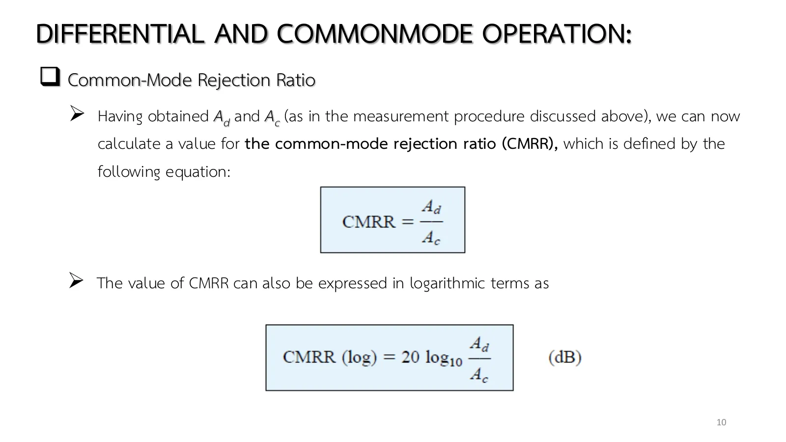
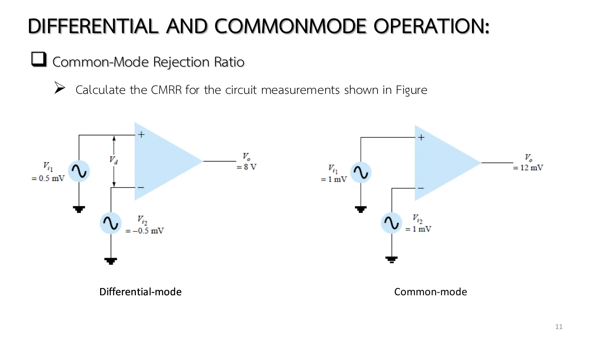

A sensor cable running several metres through a factory picks up 50 Hz hum from the mains on both of its wires at once, yet what we want to measure is the small difference between those two wires. The operational amplifier (op-amp) is built for exactly this: it amplifies the difference between its + and − inputs thousands or hundreds of thousands of times, while hardly amplifying what the two inputs have in common. This page looks at what an op-amp is, the ways a signal can be applied, how the output splits into a difference part and a common part, and how well an op-amp rejects the common part (chapter 7 slides, set 1, pp. 3–13; Boylestad sections 10.1 and 10.9).
The op-amp (slides pp. 3, 13): several differential-amplifier stages on one chip; an open-loop voltage gain of hundreds of thousands, an input resistance \(R_i\) of megohms, an output resistance \(R_o\) below 100 Ω. The output is the gain times the voltage between the input terminals, and it cannot exceed the supply (\(\pm V_{sat}\) ≈ ±13 V in the simulation).
Single-ended input (p. 4, Fig. 10.2): a signal at the + input gives an in-phase output, at the − input an inverted one. Double-ended input (p. 5, Fig. 10.3): the difference \(V_{i1} - V_{i2}\) is amplified. Common mode (p. 6): the same signal at both inputs cancels; ideally the output is zero.
Any pair of signals splits into two parts (pp. 8–9, Eqs. 10.26–10.28): a difference part \(V_d\) and a common part \(V_c\) (the average), with \(V_o = A_dV_d + A_cV_c\). To measure: apply \(V_{i1} = -V_{i2}\) = 0.5 V and read \(V_o = A_d\); apply \(V_{i1} = V_{i2}\) = 1 V and read \(V_o = A_c\).
CMRR (pp. 10–12, Eqs. 10.29–10.31): \(A_d/A_c\), or 20 log of it in decibels; the higher the better (ideally infinite). Example 10.21: 8000/12 = 666.7 = 56.48 dB. Eq. 10.31 says that with a high CMRR the output ≅ \(A_dV_d\): the common part (noise picked up by both leads) is rejected.
Tiny signals: with \(A_d\) in the thousands to hundreds of thousands, a few millivolts at the input drive the output to the rails, so practical circuits use feedback (page 7.2 onwards). This page runs the op-amp open-loop to show the bare gains.
Slide p. 3 defines the op-amp as a differential amplifier of very high gain, with a high input impedance and a low output impedance. Inside are several differential stages in a row. Its jobs range from changing the size and polarity of a voltage to oscillators, filters and instruments.
The equivalent circuit of slide p. 13 sums it up in three pieces: an input resistance \(R_i\), a voltage source \(A_dV_d\) and an output resistance \(R_o\). Ideally \(R_i\) is infinite and \(R_o\) zero: the inputs draw no current at all, and the output behaves like an ideal voltage source.

สไลด์หน้า 3: ออปแอมป์คืออะไร · แตะรูปเพื่อขยายSlide p. 3: what an op-amp is · tap to enlargeสไลด์หน้า 13: วงจรสมมูลของออปแอมป์ \(R_i\), \(A_dV_d\), \(R_o\)Slide p. 13: the op-amp's equivalent circuit, \(R_i\), \(A_dV_d\), \(R_o\)
Feed the + input with the − input grounded and the output has the same polarity as the input; feed the − input and the output is inverted (slide p. 4). Feed a signal between the two inputs and the op-amp amplifies the difference \(V_{i1} - V_{i2}\) (slide p. 5).
The fourth way is the most interesting: the same signal on both inputs (slide p. 6). Ideally the two halves cancel and the output is zero; a real op-amp leaves a small output, and that leftover tells how good the op-amp is.

สไลด์หน้า 4: ขาเข้าเดี่ยวที่ขั้ว + และที่ขั้ว − (รูป 10.2)Slide p. 4: single-ended input at + and at − (Fig. 10.2)
An op-amp has \(A_d\) = 8000 and \(A_c\) = 12 (the values measured in Example 10.21). Find \(V_d\), \(V_c\) and \(V_o\) for (a) \(V_{i1}\) = 1 mV with the − input grounded (b) \(V_{i2}\) = 1 mV with the + input grounded (c) \(V_{i1} = -V_{i2}\) = 0.5 mV (d) \(V_{i1} = V_{i2}\) = 1 mV.
Any pair of inputs splits into two parts: the difference \(V_d = V_{i1} - V_{i2}\) and the common part \(V_c = \tfrac{1}{2}(V_{i1} + V_{i2})\) (slide p. 8). The output is their sum \(V_o = A_dV_d + A_cV_c\) (slide p. 9).
The key feature of a differential amplifier is that it greatly amplifies signals that are opposite at the two inputs while only slightly amplifying signals common to both (slide p. 7). Hum that enters both wires at once is a common part, so it nearly vanishes at the output.
สไลด์หน้า 7: ขยายผลต่างมาก ขยายส่วนร่วมน้อยSlide p. 7: the difference amplified, the common part barely

สไลด์หน้า 8: \(V_d\) และ \(V_c\) (สมการ 10.26–10.27)Slide p. 8: \(V_d\) and \(V_c\) (Eqs. 10.26–10.27)
The simulations on this page use an op-amp with adjustable \(A_d\) and \(A_c\), its output clipped at \(\pm V_{sat}\) = ±13 V, and a load \(R_L\) = 10 kΩ so that an output current can be seen (the inputs draw none).
Choose a mode, then set \(V_{i1}\), \(V_{i2}\) (millivolts), the differential gain \(A_d\) and the CMRR. The lower panel splits the output into \(A_dV_d\) and \(A_cV_c\). Try the common mode: the output is a few millivolts; then lower the CMRR and watch the common part grow. Raise \(V_{i1}\) until the output hits the ±13 V rail. Hover over the op-amp to read \(V_d\) and \(V_o\).
The usual score is \(\text{CMRR} = A_d/A_c\), or in decibels \(20\log_{10}(A_d/A_c)\) (slide p. 10): the higher, the better.
Slide p. 11 measures one op-amp twice: a 1 mV difference gives 8 V at the output, a 1 mV common signal gives 12 mV. Before opening the solution, get \(A_d\) and \(A_c\) from those two lines and guess roughly how many decibels the CMRR will be.

สไลด์หน้า 10: CMRR (สมการ 10.29–10.30)Slide p. 10: CMRR (Eqs. 10.29–10.30)

สไลด์หน้า 11: โจทย์ Example 10.21 (รูป 10.52)Slide p. 11: Example 10.21 (Fig. 10.52)
สไลด์หน้า 11 ให้โจทย์ Example 10.21 โดยไม่มีเฉลย
Slide p. 11 states Example 10.21 without a solution.
↓ โจทย์ 2: Example 10.21 หา CMRR
↓ Problem 2: Example 10.21, find the CMRR
2
Example 10.21: วัด \(A_d\), \(A_c\) แล้วหา CMRR
Example 10.21: measure \(A_d\), \(A_c\), find the CMRR
สไลด์หน้า 10–11 · Boylestad Example 10.21 (รูป 10.52)
Slides pp. 10–11 · Boylestad Example 10.21 (Fig. 10.52)
From the measurements of Fig. 10.52: with \(V_{i1}\) = 0.5 mV, \(V_{i2}\) = −0.5 mV the output is \(V_o\) = 8 V; with \(V_{i1} = V_{i2}\) = 1 mV it is \(V_o\) = 12 mV. Calculate the CMRR.
Slide p. 12 rewrites the output as \(V_o = A_dV_d\left(1 + \dfrac{1}{\text{CMRR}}\dfrac{V_c}{V_d}\right)\). The bracket is the error: when the common part \(V_c\) is many times the difference \(V_d\), the CMRR must be high enough to crush that ratio.
Problem 3 has a difference of only 10 µV and a common part of 145 µV. Guess first how many percent a CMRR of 100 pulls the output away from the ideal, then compare with a CMRR of \(10^5\).
The book's Example 10.22 prints "(4000)(10 mV) = 40 mV", but 4000 × 10 mV = 40 V, beyond the op-amp's supply. Problem 3 on this page uses inputs of 150 µV and 140 µV, which give the book's 45.8 mV and 40.006 mV in the right unit.
An op-amp has \(A_d\) = 4000; the inputs are \(V_{i1}\) = 150 µV and \(V_{i2}\) = 140 µV (the book says mV, see the note above). Find \(V_o\) for a CMRR of (a) 100 (b) 10⁵.
ลองตอบก่อน
Try it first.
C
ฝึกเพิ่ม
More practice
ตอบทศนิยมอย่างน้อย 2 ตำแหน่ง
Give at least 2 decimal places
ลองทำดู 1 — ส่วน A
โหมด "คู่ (ตรงข้าม)": ตั้ง \(V_{i1}\) = 0.5 mV ขาออก 8 V ตามรูป 10.52a แล้วเพิ่มเป็น 2 mV: สมการต้องการ 32 V แต่ขาออกหยุดที่ 13 V ป้ายบอก "อิ่มตัว" นี่คือเหตุที่ออปแอมป์วงเปิดใช้ขยายสัญญาณไม่ได้
Mode "differential": set \(V_{i1}\) = 0.5 mV for the 8 V of Fig. 10.52a, then raise it to 2 mV: the equation wants 32 V but the output stops at 13 V and the badge says "saturated". This is why an open-loop op-amp cannot be used as an amplifier.
Mode "common": set \(V_{i1}\) = 1 mV for 12 mV out; lower the CMRR to 20 dB (= 10): \(A_c\) = 800 and the output grows to 0.8 V, common-mode noise leaking through.
Mode "independent": \(V_{i1}\) = 1.2 mV, \(V_{i2}\) = 1.0 mV: \(V_d\) = 0.2 mV gives 1.6 V, \(V_c\) = 1.1 mV gives 13 mV, 1.613 V in all. Check it against Eq. 10.31.
Try this 2 — problems 1–3
Problem 1, steps (a) and (c): a single-ended 1 mV and a double-ended ±0.5 mV give the same \(V_d\) but different \(V_c\) (0.5 mV and 0), so the outputs differ by 6 mV. Hover over the op-amp and compare.
Problem 3: open every step, then hover over \(R_L\): the 4.58 µA is 45.8 mV / 10 kΩ. Neither input shows any moving dots, since the input resistance is infinite.
Chapter 7 slide set I, pp. 3–13 · Boylestad & Nashelsky, 11th ed., §10.1 (Figs. 10.1–10.4), §10.4 and §10.9 (Eqs. 10.26–10.31, Examples 10.21–10.22)

![Chapter 7 slide 7, Differential and Common-Mode Operation: one of the more important features of a differential circuit connection is the circuit's ability to greatly amplify signals that are opposite at the two inputs while only slightly amplifying signals that are common to both inputs; the op-amp provides an output component due to the amplification of the difference of the signals and a component due to the signals common to both inputs; the common-mode rejection is described by the common-mode rejection ratio (CMRR).](slides/ch7a/p07.webp)